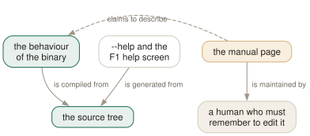

Day 14
Sharp edges
Every place the manual page and the binary disagree, what htop cannot tell you, and where to go next.
By the end of today you can
- name the questions htop is the wrong tool for, and say what to use instead
- carry a config between machines without htop quietly editing it
- read the rest of the manual page unaided, knowing which parts of it to distrust
Where the page and the binary part company
This course was written by running everything it claims against htop 3.5.3 rather than by reading the manual page. That turned up ten places where the two disagree. None is disastrous; all of them will cost you ten minutes on the day you trust the wrong one.

--help and its F1 screen all come from the same source tree and are rebuilt together, while the manual page is a separate file somebody has to remember to edit. The dashed aspect is the one to internalise — the page describes the behaviour only as well as its last editor managed. When they disagree, the generated documentation wins, and it costs ten seconds to ask.- The SYNOPSIS is wrong
- It reads
htop [-dCFhpustvH], but-vdoes not exist — the version flag is-V, andhtop -vanswersinvalid option. The same line omits-n,-M,-U,--readonly,--no-metersand--no-function-bar. -nis undocumented--max-iterationsdraws N frames and exits. It is in--helpand works; the manual page has never heard of it.- Six interactive keys are missing
- # hides the header, e shows the environment, i sets I/O priority, Y sets the scheduling policy, and . and C are aliases for sort and Setup. All are in the F1 help.
- The sort-key aliases disagree
- The page lists F6, <, >; the help lists F6, >, .. All four work — each source has a different incomplete subset.
- COLUMNS is stale
- No entry for
ELAPSED,SCHEDULERPOLICY,SECATTR,CWD,CONTAINER,ISCONTAINER,GPU_TIMEorGPU_PERCENT. M_M_PSSWPdoes not exist- A typo for
M_PSSWP. Copy it into a config and htop drops it in silence. - The traced-state letter
- COLUMNS says
Tfor traced or suspended; the F1 help sayst. Believe the help. - METERS has lost some words
- “Default CPU bar segments ( use text attributes instead of hues:” — an unclosed parenthesis and a missing subject. The content around it is correct.
- The rewrite rule is overstated
- The page says the config “is overwritten upon clean exit”. In 3.5.3 it is overwritten only if a setting actually changed — and plain toggles like t, K and I count, not just Setup.
fields=is undocumented entirely- The legacy numeric column list silently overrides
screen:Main=regardless of order. Nothing anywhere mentions it.
What htop cannot tell you
Four questions it is simply the wrong tool for. Knowing them is worth more than another key binding.
- “What was the peak?”
- htop samples; peaks between samples do not exist for it. The kernel keeps a high-water mark in
/proc/PID/statusasVmHWM, and htop has no column for it. - “What happened last Tuesday?”
- Nothing is recorded. Graph-mode meters keep a few screens' worth of history and no more. This is what
pcp-htopand Performance Co-Pilot exist for. - “Which of my fifty machines is unhappy?”
- One host per htop, and one terminal per host. A fleet needs a metrics system.
- “Why is this process slow?”
- htop narrows it to CPU, memory or I/O and hands you to something else —
strace,perf, a profiler. Day 7's keys are the doorway, deliberately.
A note on pcp-htop
The manual page you have been reading also covers pcp-htop, which is a separate binary: the same interface over Performance Co-Pilot metrics instead of /proc. It reads its config from ~/.pcp/htop/htoprc so the two can coexist, and it can add meters, columns and whole screens from configuration files under the same directory.
That is the interesting part: it turns every PCP metric — including anything exported in OpenMetrics format — into something htop can display, and it can read from a remote host with --host. This course does not cover it, because it is a different tool with its own manual page. If “what happened last Tuesday” is a question you keep having, pcp-htop(5) is where to go next.
Carrying your config between machines
You now have an htoprc you can defend line by line. Two things keep it that way.
- Version control it, and
chmod 444it once you are happy. htop rewrites the file in full — comments and all — the first time you change any setting and exit cleanly. Read-only stops that silently and costs you only the ability to save from Setup, which you no longer need. - Use
$HTOPRCfor per-machine differences. A laptop and a build server want different headers. Set it in your shell profile, and remember that if the file it names does not exist, htop uses built-in defaults and creates nothing — it does not fall back to~/.config/htop/htoprc, so a typo in the path presents as “my config stopped working”.
Where to go next
The manual page's own SEE ALSO is a good reading list, and the first entry is the important one.
proc(5)- Where every number in this course actually comes from. Read the sections on
stat,statm,statusandsmaps_rollupand htop stops being magic. top(1)- The ancestor. Worth knowing because it is on machines where htop is not, and because its Irix/Solaris mode vocabulary is where Day 1's
CPU%convention came from. ps(1)- For scripting. htop is for looking;
psis for pipelines. free(1),uptime(1)- The header meters, as one-shot commands.
limits.conf(5)- Why a process could not do the thing you were watching it fail to do.
pcp-htop(5)- The recording version, and the extension format for custom meters and columns.
Today's habit
Keep the one that built this course: when a tool and its documentation disagree, believe the tool, and write the disagreement down. Ten of them turned up in a 768-line manual page for a program in its third major version and under active maintenance. That is not a criticism of htop — it is the normal condition of documentation, and the only defence is a habit of checking.
The practical form is small: before you rely on a flag, run --help. Before you rely on a key, press F1. Both take ten seconds and both are generated from the code.
That is the fortnight. You started able to tell that a machine was busy; you can now say which process, why, whether it is CPU or memory or I/O, what it belongs to, what it has open, and what to do about it — and you have a config file you wrote yourself, with a reason attached to every line.
New vocabulary
Commands
| Command | Does |
|---|---|
htop --drop-capabilities=strict | Shed Linux capabilities at startup. Kills renicing and delay accounting with them. |
pcp-htop | A different binary: htop over Performance Co-Pilot metrics. Its own manual page, pcp-htop(5). |
Today's configappend to ~/.config/htop/htoprc
Split the CPU bar so that steal and io-wait are visible as their own segments. Off by default because on a laptop they are always zero; on anything virtualised or anything with real disks they are the only segments that matter, and folded into the defaults they are invisible. The cost is four more colours to recognise.
detailed_cpu_time=1
The last line, and a reminder rather than a setting. Keep this file in version control, and once you are happy with it: chmod 444 ~/.config/htop/htoprc Without that, the first time you press t, K or I and quit cleanly, htop rewrites this file in its own canonical form and every comment above is gone. For a shared home directory across several machines, point $HTOPRC at a per-machine file instead -- and remember that if that file does not exist, htop uses its built-in defaults rather than falling back to this one.
color_scheme=0
htop reads this file once, at startup, and there is no reload key: quit and start it again. Note that htop rewrites the file — comments and all — on a clean exit from any session in which you changed a setting.
Drillsdo these in a real terminal, today
Self-check
Answer out loud first, then unfold.
Your monitoring says a service is being OOM-killed, but you watch it in htop for an hour and its RES never goes above 400 MB. What is htop failing to show you?
The peak. htop samples every 1.5 seconds and shows you what it found; a process that allocates 6 GB over 200 milliseconds and is killed for it is invisible between two samples, exactly as on Day 1.
The kernel does keep a high-water mark — VmHWM in /proc/PID/status — and htop has no column for it. This is the honest boundary of the tool: htop answers “what is happening now” extremely well and “what happened” not at all. For the second question you need something that records, which is what pcp-htop and the Performance Co-Pilot behind it exist for.
Which parts of man htop should you trust, and which should you check?
Trust the prose sections that explain concepts: MEMORY SIZES, EXTERNAL LIBRARIES, CONFIG FILES' description of where the file lives, and the METERS account of the CPU segments. These describe design decisions, which do not drift.
Check anything that is a list: the SYNOPSIS, the option list, INTERACTIVE COMMANDS and COLUMNS. Lists go stale one entry at a time and nobody notices. The two authorities are htop --help for flags and the F1 help screen for keys, both generated from the same source as the behaviour.
You keep one dotfiles repository for a laptop and a 64-core build server. How should the htop config be arranged?
A shared, read-only base is the wrong answer on its own, because the two machines genuinely want different headers — the per-core CPU meters that are fine on four cores are unusable on sixty-four, and detailed_cpu_time matters on a server and not on a laptop.
Use $HTOPRC per machine, with the shared parts kept in the repository and symlinked or generated. Set it in your shell profile so it applies to every invocation, and remember that a missing $HTOPRC file silently yields default htop rather than falling back — so a typo in the path looks like “my config stopped working” rather than an error.
After fourteen days, what is htop actually for?
Answering “what is this machine doing right now, and which process is responsible” faster than any other tool, on a machine you are sitting in front of. Everything it is good at follows from sampling /proc on a short interval and drawing it well.
And everything it is bad at follows from the same thing. It does not record, so it cannot tell you about last Tuesday. It samples, so it misses anything brief. It is per-machine, so it cannot see a fleet. Knowing that boundary is most of what separates someone who uses htop from someone who reaches for it and then stares at it.
Cheat sheet
man htop vs the binary -- believe the binary:
SYNOPSIS lists -v -> it is -V; -n -M -U --readonly are missing entirely
-n / --max-iterations -> undocumented, works, exits after N frames
# e i Y . C -> six keys the page omits; all in the F1 help
COLUMNS -> no ELAPSED SCHEDULERPOLICY SECATTR CWD CONTAINER GPU_*
M_M_PSSWP -> typo; the column is M_PSSWP
'T' for traced -> the F1 help says 't'
'overwritten on exit' -> only if a setting CHANGED; t/K/I count
fields= -> undocumented, and it beats screen:Main=
htop cannot tell you: the peak (see VmHWM in /proc/PID/status)
what happened yesterday (see pcp-htop)
anything about another machine
chmod 444 ~/.config/htop/htoprc # stop htop rewriting your comments
HTOPRC=~/dotfiles/htoprc.$(hostname) htop # per-machine; NO fallback if missing
next: proc(5) -- stat, statm, status, smaps_rollup. Then top(1), ps(1), pcp-htop(5).
Everything through Day 14
Keys
| Key | Does |
|---|---|
| Ctrl-L | Redraw the screen and recalculate, without waiting for the next tick. |
| Z | Pause and resume sampling. The screen freezes; the machine does not. |
| F10q | Quit. This is also the only exit that saves your settings. |
| UpDown | Move the selection one row. Alt-k and Alt-j do the same. |
| PgUpPgDn | Move the selection a screenful at a time. |
| HomeEnd | Jump to the first or the last process in the list. |
| LeftRight | Scroll the whole list sideways. Also Alt-h and Alt-l. |
| Ctrl-A^ | Scroll back to the start of the selected process's line. |
| Ctrl-E$ | Scroll to the end of the selected process's line. |
| Alt-UpAlt-Down | Pan the view without moving the selection. Shift-Up/Shift-Down too, if your terminal lets them through. |
| p | Toggle full program paths in Command. |
| m | Toggle merging exe, comm and cmdline into Command. |
| F3/ | Incremental search: move the selection to the next match. Does not hide anything. |
| F3 | While searching: jump to the next match. Shift-F3 goes backwards. |
| F4\ | Incremental filter: hide every row that does not match. |
| Enter | In the filter prompt: keep the filter and put the prompt away. |
| Esc | In the filter prompt: clear the filter. In search: cancel it. |
| u | Open the user menu and show only one user's processes. |
| Digits | Type a PID and the selection jumps to it. Silently — there is no prompt. |
| F6><. | Open the “Sort by” menu. All three punctuation aliases work. |
| I | Invert the sort direction. The arrow in the heading flips. |
| NPMT | Sort by PID, CPU%, MEM% and TIME. The top(1) compatibility keys. |
| F5t | Toggle tree view. The F5 label changes to List while you are in it. |
| +- | Expand or collapse the selected subtree. |
| * | Expand or collapse every subtree at once. |
| F | Follow: pin the selection to this process wherever it moves. |
| Space | Tag or untag the selected process. Tagged rows stay tagged until you clear them. |
| c | Tag the selected process and all of its children. |
| U | Untag everything. The most important key on this page. |
| F9k | Open the signal menu. Defaults to 15 SIGTERM. |
| F7] | Raise priority — lower the nice value. Root only. |
| F8[ | Lower priority — raise the nice value. Anyone can do this to their own. |
| } | Raise the autogroup priority. Shift-F7. Root only. |
| { | Lower the autogroup priority. Shift-F8. |
| a | Set CPU affinity: tick the CPUs this process may run on. |
| i | Set the I/O scheduling class and priority. Not in the manual page. |
| Y | Set the scheduling policy. Not in the manual page either. |
| l | List open files, by running lsof against the selected process. |
| s | Trace system calls, by running strace against it. |
| e | Show the process's environment. Not in the manual page. |
| w | Show the command line wrapped across the whole screen. |
| x | Show the process's active file locks. |
| b | Show a backtrace. Only if htop was compiled with it, which it usually was not. |
| F5 | Refresh the open screen. F3 and F4 search and filter it. |
| F8 | In the strace screen: toggle auto-scroll. F9 stops the trace. |
| # | Hide and show the header meters entirely. Not in the manual page. |
| F2SC | Open Setup, where meters are chosen. C is an undocumented alias. |
| F2SC | Open Setup. C is an alias the manual page does not mention. |
| F10 | Leave Setup. Labelled Done. |
| Space | In Setup: toggle the highlighted option, or add the highlighted meter. |
| K | Hide or show kernel threads. Hidden by default. |
| H | Hide or show userland threads. Shown by default — this is why your list is so long. |
| Tab | Move to the next screen. Shift-Tab goes back. |
| O | Hide or show processes running in containers. A toggle, off by default. |
Commands
| Command | Does |
|---|---|
htop | Start htop, reading ~/.config/htop/htoprc once at startup. |
htop -d 10 | Sample every 10 tenths of a second. Clamped to the range 1–100. |
htop -n 5 | Draw five frames, then exit on its own. Absent from the manual page. |
htop -V | Print the version. The -v in the SYNOPSIS does not exist. |
htop -F chrome | Start with the filter already applied. Multiple terms: -F 'nginx|php'. |
htop -p 1,843 | Show only these PIDs, and nothing else ever appears. |
htop -u | Show only your own processes. |
htop -u postgres | Show one user's processes. A numeric UID works too. |
htop -s PERCENT_MEM | Start sorted by a column. Forces list view. |
htop -s PERCENT_MEM -t | Sorted and in tree view — the one way to have both. |
htop --sort-key help | Print every sortable column name and what it means. |
htop -t=soft | Tree view with a stable cursor line. classic, soft and hard, or 0/1/2. |
htop --readonly | Disable every process- and system-changing feature for this session. |
htop --no-meters | Start with the header hidden. Gives the process list the whole terminal. |
htop -C | Monochrome. The bar segments become bold, normal and dim instead of colours. |
htop -U | ASCII instead of unicode for the graph meters. |
HTOPRC=~/x htop | Read (and write) a different config file. One config per machine, one shared home directory. |
chmod 444 ~/.config/htop/htoprc | Make the file read-only. htop then runs normally and stops clobbering it. |
htop --sort-key help | The authoritative column list, straight from the binary. Better than the manual page. |
htop --drop-capabilities=strict | Shed Linux capabilities at startup. Kills renicing and delay accounting with them. |
pcp-htop | A different binary: htop over Performance Co-Pilot metrics. Its own manual page, pcp-htop(5). |
Options
| Option | Does |
|---|---|
delay | Tenths of a second between samples in htoprc. Default 15, i.e. 1.5 s. |
M_VIRT | Address space the process has mapped. VIRT. Mostly promises, not memory. |
M_RESIDENT | Pages actually in RAM, shared ones counted in full. RES. |
M_SHARE | The part of RES that other processes also map. SHR. |
M_PRIV | Resident minus shared — what dies with the process. PRIV, a default column. |
M_SWAP | Pages of this process pushed out to swap. SWAP. |
M_PSS | Resident, but each shared page divided by its number of sharers. PSS. |
M_PSSWP | The same proportional treatment for swapped-out pages. PSSWP. |
M_EPSS | PSS plus PSSWP: the whole footprint, proportionally. EPSS. |
PERCENT_MEM | RES as a share of total RAM. MEM% — and it inherits RES's double counting. |
detailed_cpu_time | Split the CPU bar into irq, soft-irq, steal, guest and io-wait. Default off. |
header_layout | One to four columns, in fourteen width presets. Default two_50_50. |
column_meters_0 | The meters in the first header column, space-separated. |
column_meter_modes_0 | Their display modes: 1 bar, 2 text, 3 graph, 4 LED. |
highlight_changes | Highlight processes that are new or whose command line changed. Default off. |
highlight_changes_delay_secs | How long that highlight lasts. Default 5. |
enable_mouse | Let htop capture mouse events. Default on, which costs you terminal text selection. |
header_margin | Leave a blank line around the header. Default on. |
screen_tabs | Show the names of screen tabs above the list. Default on. |
fields | The legacy numeric column list. Silently overrides every screen: line. |
NLWP | How many threads this process has. The cheapest way to spot a thread pool. |
TGID | Thread group id — a thread's process. Equals PID for a process. |
STARTTIME | Wall-clock time the process started. Shown as START. |
ELAPSED | How long it has been running. Undocumented in the manual page. |
OOM | The OOM killer's score for this process. Who dies first under memory pressure. |
CTXT | Context switches counted over the refresh interval. A rate, not a lifetime total. |
PROCESSOR | Which CPU it last ran on. Shown as CPU. |
SCHEDULERPOLICY | The scheduling policy from Day 6's Y dialog. Undocumented in the manual page. |
SECATTR | The SELinux or AppArmor label. Undocumented, and very wide. |
show_thread_names | Show each thread's own name rather than its process's command. Default off. |
highlight_threads | Draw thread rows in a different colour. Default on. |
screen:NAME | Define a screen and its columns, in order, space-separated. |
.sort_key | The sort column for the screen defined immediately above. |
.sort_direction | -1 for descending, 1 for ascending. |
.tree_view | Whether this screen starts in tree view. Per-screen, like everything dotted. |
RCHAR | Bytes the process has read through read(). Counts cache hits — most of this never touched a disk. |
WCHAR | Bytes written through write(). Counted when the call returns, not when the data lands. |
RBYTES | Bytes actually fetched from the block layer. Real disk reads. |
WBYTES | Bytes actually sent to the block layer. |
CNCLWB | Write bytes cancelled — dirtied, then truncated or deleted before writeback. |
IO_READ_RATE | Block-layer read rate. Shown as DISK READ. |
IO_WRITE_RATE | Block-layer write rate. Shown as DISK WRITE. |
IO_RATE | The two rates added. Shown as DISK R/W, and the right default sort for an I/O screen. |
IO_PRIORITY | Scheduling class and priority: R realtime, B best-effort, id idle. |
PERCENT_IO_DELAY | Share of time blocked on synchronous block I/O. Needs delay accounting. |
PERCENT_CPU_DELAY | Share of time runnable but not scheduled. The number that proves CPU contention. |
PERCENT_SWAP_DELAY | Share of time waiting for pages to swap back in. |
CGROUP | The full cgroup path. Displayed as CGROUP (raw), and far too wide to keep on screen. |
CCGROUP | The same path, compressed by ten rules. Displayed as CGROUP (compressed). |
CONTAINER | The container's name, guessed by heuristics. Undocumented in the manual page. |
ISCONTAINER | Whether the process is inside a child container. Undocumented too. |